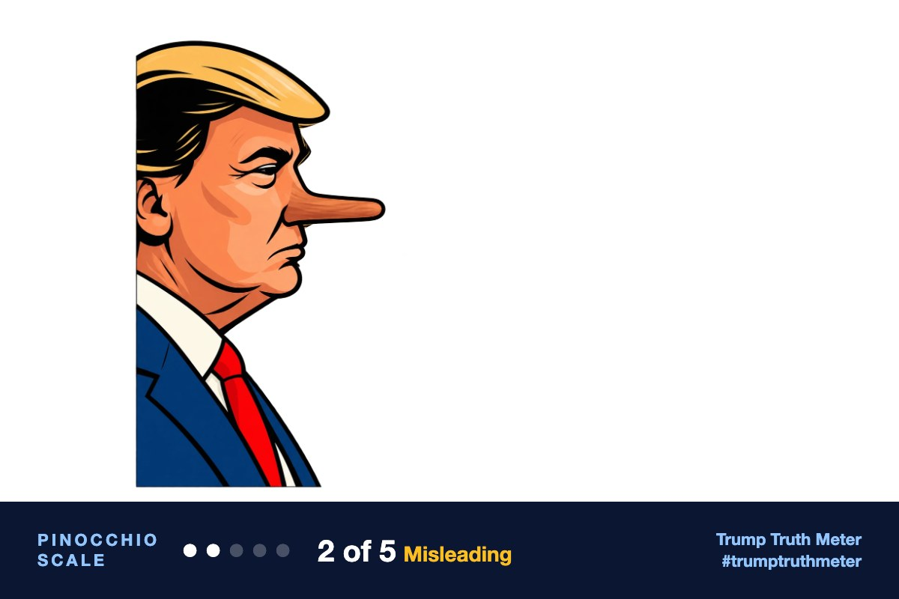

@realDonaldTrump · Oct 12, 2026, 7:23 AM ET · view on Truth Social
RT: https://truthsocial.com/users/realDonaldTrump/statuses/117427679576446625
[Quoting @realDonaldTrump]
RT: https://truthsocial.com/users/realDonaldTrump/statuses/117427679576446625
[Quoting @realDonaldTrump]

The post is mostly praise and partisan spin. Its central history claim — that Michigan, Wisconsin, and Pennsylvania were not even competitive for Republicans before Trump — is false: those states were already close, including razor-thin Republican losses in Wisconsin in 2000 and 2004.
Editor’s note: All four reviewers agreed this is a Gunther Eagleman repost, not Trump’s prose, and that the work-ethic lines and the “moved further left” line are opinion or unverifiable. They split on the Rust Belt claim: Gemini treated the “Blue Wall” as mostly true and scored the post 85, while Grok, Claude, and ChatGPT correctly flagged “not even competitive” as the central problem. I sided with that majority and marked the claim false rather than merely misleading, because Wisconsin was decided by fractions of a point in 2000 and 2004 and Pennsylvania and Michigan were low-single-digit races in 2004 — not states Republicans had been shut out of.
Someone else’s words (97% confident)
Trump reshared a screenshot of Gunther Eagleman’s commentary; the words are Eagleman’s, not Trump’s.